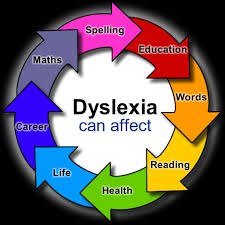

Disorganised me: my story
Part of Helen's "All about me" series on living with dyslexia and being twice exceptional.
I’m not sure whether disorganised is the best way to describe it, but I find it very hard to work in what others consider to be a logical, ordered sequence. When I am in my office catching up on administrative tasks I work in a very haphazard way. I often wish I could video myself as I am sure my boss and many of my work colleagues would be surprised if they knew this was the way I worked. Firstly, I have a pack of post its next to me because as I start working through one task my mind will remember something else I am meant to do. I always write this down on a post it so that I don’t forget it. However, sometimes I will leave the first task and start this second task straight away. Then about half way through this second task I might notice something on my desk that I need to sort out. Again, I will stop the task I am doing and start this third task. But as I work through the third task I will remember that I didn’t finish the first or second task and I will go back to one of these. And so, the merry go round will continue of me flitting from task to task and adding new tasks to my post it list until I have completed my tasks or time runs out. Over the years I have tried to fight it and work sensibly through my to do list but I end up being less productive. I spend so much energy trying to stay on task that the first task will take forever and I rarely get to start the other tasks. In addition, I feel frustrated that I have worked so slowly. On the other hand, if I allow myself to go with the flow and work the way I feel comfortable I feel energised and seem to complete more work. The same is true when I write, I really struggle to organise my thoughts one at a time in a logical order. My mind seems to flit from one thought to another and my hand cannot keep up. When I write a Blog article I do start with the title and I usually manage the first couple of sentences but then my mind will jump to ideas that belong at the end or in the middle of the article. I will write a sentence for each idea and then go back to working on the introductory paragraph. Then other ideas pop into my mind and I will add these to which ever part of the article I think they belong to. I will continue to go back and forth between ideas, adding sentences and developing paragraphs. I will read and re-read, change the order and edit until I am happy I am very grateful for word processors that allow me work in a fluid way, jumping from idea to idea. Again, when I work like this my brain seems to flow and feel happy. If I try to write an article in order I get distracted and frustrated. Perhaps this is way everyone would work this way if they had the choice – I just know from observing my work colleagues it does not seem to be the case! There are 2 things I take from my working style and experiences. First, we need to learn to accept ourselves and the way our minds work best. Second, we need to accept that what works for us and seems logicial and straightforward may not work for someone else. Unfortunately, schools seem to spend too much time trying to get all children to work in the same way rather than accepting that our minds are wired differently and trying to help children play to their strengths. Part 5 All about me – I’m SLOW but not in the way you think
I am slow at completing most tasks and as a result some people conclude that it is because my mind is slow and that I am finding the tasks difficult. However, as I will explain this is really not the case. Our world too often equates being quick with being bright and being skilled at something, particularly at school or in the work place. If a child hesitates or is slow to give an answer many teachers will think that they do not really understand the topic properly. Equally if a child is given a set of sums to do and they only complete half in the time allocated, a teacher will conclude that the child was struggling to complete them even if they are all correct. Many teachers find it hard to understand that needing time to process a question or formulate a sensible answer does not indicate a lack of understanding or depth of knowledge. Also completing a task slowly does not indicate that the person finds the task hard, has weak or partial understanding or lack of competence in that area. It is possible to be intelligent, skilled and capable and JUST be slow.
I am slow at almost every practical task from chopping an onion to buying a list of groceries in the supermarket. In nearly every task it will take me twice as long as my husband to complete it but doesn’t mean that I cannot do the task properly. When I am cooking I work slowly but still create delicious food. If I do try to go faster I usually make a mistake, hurt myself and get stressed. In the end I am not faster at all. I am slow at academic tasks too – slow to read, to write and complete calculations. But I can read at a high level, I can write informatively and I can complete complex calculations. Again, if I try to go faster I end up having to do the task twice as I miss important information, miss out words or miscalculate. In a meeting, I will often sit quietly for most of it, thinking and processing what everyone is saying. Then when I am ready I will make a comment or explain my point of view. However, if I am put on the spot or asked my opinion before I have formulated my thoughts, I will be tongue tied and look like I don’t understand or was not listening. Strangely when it comes to thoughts and ideas my mind is like a pinball machine, it is not slow at all. Very often when I sit quietly or am doing a task or am trying to go to sleep my mind will be bombarded with thoughts. It can quite frustrating when your hand cannot write then down quickly enough and you cannot act on them all at once! In a world that is going faster and faster and workplaces that demand more and more productivity, many people are missing the point that speed is not competence or even excellence. Many talented and hardworking people are made to feel inadequate because they can only work at certain pace. As a world, we need to learn that NOT everything has to be done quickly, it is OK to do things slowly and well. Part 4 Adult dyslexia

One of the questions I get asked most is 'Doesn't dyslexia go away as an adult?
The short answer is "no." The longer answer is .....that for me it is easier to deal with most situations as an adult but the underlying problems have not gone away. I still have problems with auditory processing, short term auditory memory, sequencing, reading aloud and writing.
The difference now is I can anticipate and plan for things I find difficult. I either avoid the situation, or if there is no way out I have strategies to cope. I'm not afraid to ask others to help me or to delegate. The sad thing for children is that there often is no escape. They often haven't developed helpful strategies to compensate. They usually can't delegate or avoid the task as it is an activity that the teacher expects them to complete themselves.
As an adult we often have more choices. I have chosen a job where I can play to my strengths - I spend my time interacting face to face, doing hands on, practical activities and being creative. I can use my strong verbal skills and general knowledge. While I do have to read and write it is in my own time and I can take as long as want (or need). Noone sees that I spend twice as long writing lesson plans or reports. For me the main difficulty that remains is auditory processing difficulties. I need visuals as well as words to understand something. If I am talking to someone I need to see their face, see their body language to follow the conversation. As a result I have strong dislike of phone calls as I have misunderstood things so many times. If someone gives me address over the phone I am prone to mishearing it. Usually I have to write what I think I heard phonetically and then use a map to find the likely address. Even when someone spells out a name, my brain seems to scrabble the letters and I often can not write the letters down quickly enough. Again I have to find information from another source. Email and the internet has been such a help to me is this respect. Most of the time I don't have to make phone calls at all and I can communicate and get information with less risk of misunderstanding.
Reading aloud is another thing that remains embarrassing and painful. I am still unable to read aloud as an adult without stumbling over my words or making a mistake. Practicing before hand doesn't seem to make much of a difference. I particularly find names or longer polysyllabic words difficult, I do not seem to be able to break up the word correctly and will often change the order of the sounds or syllables without meaning to. It has taken me a long time to be able to say 'Vietnamese' as may brain wants to swap the n and the m. "Compartmentalise" is a word I wish I could say but I can never get the syllables to come out in the correct order so I have to find another way of explaining myself. As child I would invent names of characters in book when I couldn't read them, like "Mr T' for Mr Tomkinson. I remember as a student teacher that class teachers often thought an easy and fun task was to read a story to the class. For me it was my idea of a nightmare, trying to keep track of the text, while holding the book so the children could see the pictures, deciphering unfamiliar names without any practice and trying to keep an eye on the children to manage their behaviour all at the same time. As student there was no escape, I had to endure this stressful ordeal, hoping the children would not sense my fear or laugh when I stumbled over my words. As a young teacher I found ways around my problem. I learnt a few stories so that I could tell them without really having to read, I opted for story telling whenever I could and the children loved this, I used story tapes for longer stories or used confident readers to read for me. I still have to look for creative ways of avoiding public reading, luckily these days I am rarely put on a the spot. When I do staff meetings I use key words and 'ad lib', I never read from my notes. If I have to explain something at a meeting I read to myself and summarise the main points to share with others. If I do have to read aloud to the children, I read as slowly as possible to try and give my brain a chance to process each word correctly.
Mainly I just have to learn to laugh if I do make a mistake, we all have our weaknesses after all! Part 3
After my third session of dyslexia teacher training I could no longer avoid the idea that I was dyslexic. I wasn't because I was uncomfortable with the label, I just didn't want to claim something that wasn't true. However once I accepted it, so many of my experiences at school, university and as a teacher made sense. It was like having all the pieces of a jigsaw and finally realising what picture they make together. Knowing I am dyslexic has been a real eye opener for me and I personally have found it empowering. Situations that I would avoid or be embarrassed about I am more prepared to work round. I am more accepting of myself and get less frustrated about the things I find difficult.
I give myself more time for written tasks, I know I have to proofread everything thing 2 or 3 times and I am not surprised when I find I have written 'of' instead of 'for' or 'swim' instead of 'swimming' or my favourite 'to' instead of 'the'. Spell checkers are no help with these sort of mistakes!
I know that if someone gives me directions or a message I have to write it down straight away because I will forget or get confused about the sequence. I carry a notebook everywhere. If I am going somewhere new, printing out a map is essential. It also means if I do need to ask for directions some one can show me on the map and I don't have to try to process verbal instructions.
I have my mobile number saved in my phone, I can't remember it. The numbers I do remember like pin numbers are because they have a pattern or meaning to them. I also remember the physical sequence on a key pad but not the digits themselves.
I try to avoid reading aloud as I am not fluent and I stumble over my words. This is the one thing I haven't really found a solution to. When I can, I practice reading the text to myself first, but it doesn't really help as the words still come out wrong when I read aloud. I also find hard to read names or long polysyllabic words. Dinosaurs are a nightmare, luckily children love to tell you what they are and this lets me off the hook.
While I don't tell everyone I meet that I am dyslexic, it is a relief to be able to explain when I am struggling with a situation or task many adults think is very straightforward.
Part 2
Much as we might want to avoid labels they are put on us from an very early age and they shape what we think about ourselves. And those beliefs end up shaping us. At school I was labelled shy, bright and lazy. There was no such thing as dyslexia in those days. My mum tells me that my infant teachers thought I was 'backwards'. I was so shy I barely spoke, I was slow to learn to read and even slower to complete any task that involved writing. My first Junior school teacher was surprised to find that I was good a maths....I had been so slow in infant school I never got to the harder stuff. I couldn't copy from the board, a standard task in those days. I was always last to finish anything....even my lunch. I was uncoordinated and terrible at PE.
In Secondary school I was in top set for all subjects except English. I had good general knowledge, I remembered every fact that I was taught effortlessly. I was good a maths and science but terrible at reading aloud, writing and spelling. And I was still very slow... ...so I was definitely 'lazy' and I was 'careless' with my work. As an experienced teacher now, I read this and the signs of dyslexia are obvious. But strangely I only realised I was dyslexic when I was training to be a special needs teacher. My headteacher put me forward for dyslexia training as she felt I had a special empathy with the children who had learning difficulties in my classes. For me I just did what came naturally, I did what I thought all teachers did. I believed in all my children, I was convinced that with encouragement and guidance they could all achieve something. I guess some of this came from being misunderstood as a child.
I can still remember sitting through my first lot of dyslexia training. We looked at a list of common characteristics of dyslexic learners. Mentally I went through the list thinking about how many of them applied to me. Still I managed to dismiss the idea that I was dyslexic with the conclusion that these things must apply to many people. When I went on a second training course and the same thing happened, I read the statements and thought, "I do that and that and that...." Slowly I started to accept that I must be dyslexic.
Looking back, being dyslexic explained many of the challenges and frustrations that I experienced as a teenager and young adult. I could not copy a text without making a mistake, which cost me many hours of time as a student and infuriated my first headteacher when my set of reports were riddled with errors. Any task that involved reading or writing seemed to take me twice as long as anyone else. This was evident when my friends completed assignments and lessons plans quickly and effortlessly. It wasn't that I couldn't read or write well, it was just that each task was very time consuming.
While I loved to read to myself, reading aloud still remained embarrassingly hard. I remember as a student teacher that class teachers often thought an easy and fun task was to read a story to the class. For me it was my idea of a nightmare, trying to keep track of the text, while holding the book so the children could see the pictures, deciphering unfamiliar names without any practice and trying to keep an eye on the children to manage their behaviour all at the same time. As student there was no escape, I had to endure this stressful ordeal, hoping the children would not sense my fear or laugh when I stumbled over my words. As a young teacher I could control my environment -I learnt a few stories so that I could tell them without really having to read, I opted for story telling whenever I could and the children loved this, I used story tapes for longer stories or used confident readers to read for me.
This ability to adapt and develop our own strategies is what makes many mildly dyslexic adults successful in their lives and careers. However I would not wish on anyone the stress of trying to deal with these difficulties alone, particularly as it become more evident that others around me were not struggling with the same things. This is where understanding yourself and reasons for your difficulties can be so empowering. Part 1
I am twice exceptional......this is a bold statement for any adult to make. I know many people hate labels (and aren't they for children anyway?) To me labels are the way that we understand ourselves and if we understand ourselves we can function better in the complex world we live in. Labels unlock practical solutions to our difficulties. I am gifted and dyslexic.....not an easy thing to say but it explains so much of my life so far. The dyslexic part is easier to say, it is a label that many people seem happy to accept these days. People are generally sympathetic and interested when you mention you are dyslexic. They want to know how you found out and does it still affect you as an adult.
The gifted part is much harder. It seems to be such an emotive term that provokes anger and scorn from many. 'Who are you to think your child is gifted?' and worse still 'What do you mean you're gifted, do you think you're better that other people?' Sadly most people who genuinely use the term are not trying to boast but rather are trying to make sense of not fitting in. In many cases they have experienced challenging parenting issues which they are trying to understand and come to terms with. For adults it can explain many years of emotional turmoil and feeling different. For me I have to grasp the nettle as being gifted makes my life make sense in a way that other things don't.
I hope in my blog to share on a personal and professional level about dyslexia and giftedness. There will be articles for both parents and teachers. I will share some top tips, resources and personal experiences may help you on your own journey.